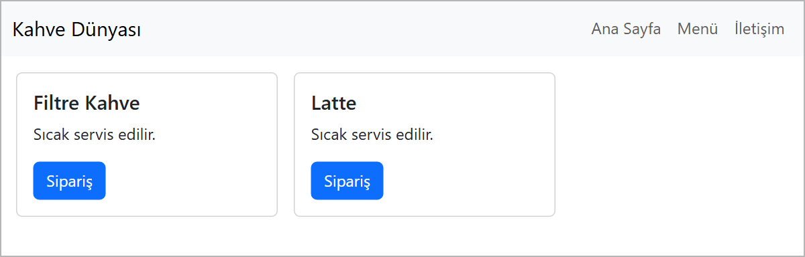
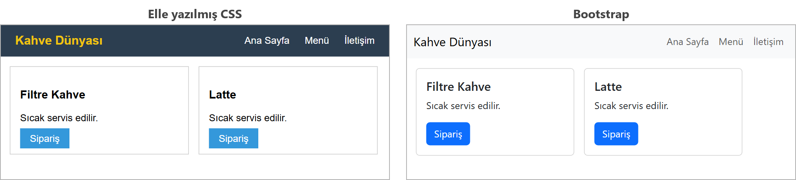

Bootstrap Tanıtımı
Bu sayfada
Harici stil dosyasını <link> ile bağlamayı 6. haftada, CSS'e Giriş konusunda; göreli yolu ise 3. haftada, Bağlantılar ve Görseller konusunda gördük. Bootstrap da aynı yolla bağlanan bir stil dosyasıdır.
Bootstrap bu derste tanıtım olarak işlenir; final sınavı kapsamında değildir.
1CSS Framework Nedir?
Bir mobilyayı sıfırdan yapmak için tahtayı kesmeniz, zımparalamanız, boyamanız gerekir. Hazır parçalarla satılan bir mobilyada ise parçalar kesilmiş ve boyanmıştır; siz yalnızca birleştirirsiniz. CSS framework de böyledir: menü, kart, düğme gibi sık kullanılan parçaların CSS'i önceden yazılmıştır. Siz yalnızca HTML'e doğru class adlarını verirsiniz.
En yaygın CSS framework'lerinden biri Bootstrap'tir. Bootstrap'in temeli tek bir CSS dosyasıdır (bootstrap.min.css); içinde yüzlerce hazır class bulunur.
Framework CSS'i hazır verir ama altında bildiğiniz CSS vardır. Örneğin Bootstrap'teki d-flex class'ı, 10. haftada, Flexbox 1 konusunda öğrendiğiniz display: flex kuralını uygular.
2Bootstrap'i Sayfaya Ekleme
Bootstrap dosyası derste USB bellekle ya da ortak klasörle dağıtılır; internet bağlantısı olan bir bilgisayarda Bootstrap'in resmî sitesinden (getbootstrap.com) de indirilebilir. İnternet olmayan bir bilgisayarda da çalışması için dosyayı projenizin içine koyarsınız:
web_sitem/
├── index.html
└── css/
└── bootstrap.min.css
Sonra <head> içinde, kendi stil dosyanızı bağlar gibi bağlarsınız:
<link rel="stylesheet" href="css/bootstrap.min.css">
href içindeki css/bootstrap.min.css bir göreli yoldur: "bu sayfanın yanındaki css klasöründeki bootstrap.min.css dosyası" demektir.
3Class ile Biçimlendirme
Bootstrap'te CSS kuralı yazmazsınız; öğeye hazır class verirsiniz. Bu haftanın örneğinde kullanacağımız class'lar şunlardır:
| Class | Ne yapar? |
|---|---|
navbar | Menü çubuğu |
navbar-expand | Menü bağlantılarını her ekranda yan yana dizer |
bg-body-tertiary | Menüye açık gri arka plan verir |
container-fluid | Menünün içeriğini sayfa genişliğinde bir kutuya alır |
navbar-brand | Menüdeki site adı |
navbar-nav, nav-item, nav-link | Menü listesi, liste ögesi ve bağlantı |
card, card-body | Kart ve kartın iç boşluklu gövdesi |
card-title, card-text | Kart başlığı ve kart yazısı |
btn, btn-primary | Düğme ve mavi (ana) düğme rengi |
d-flex | display: flex |
gap-3, p-3 | 16 piksellik gap ve padding |
Bir öğeye birden fazla class, aralarında boşluk bırakılarak yazılır: class="btn btn-primary".
4Örnek: Hazır Menü ve Kart
<!DOCTYPE html>
<html lang="tr">
<head>
<meta charset="utf-8">
<meta name="viewport" content="width=device-width, initial-scale=1">
<title>Bootstrap ile Menü ve Kart</title>
<link rel="stylesheet" href="css/bootstrap.min.css">
</head>
<body>
<nav class="navbar navbar-expand bg-body-tertiary">
<div class="container-fluid">
<a class="navbar-brand" href="#">Kahve Dünyası</a>
<ul class="navbar-nav">
<li class="nav-item"><a class="nav-link" href="#">Ana Sayfa</a></li>
<li class="nav-item"><a class="nav-link" href="#">Menü</a></li>
<li class="nav-item"><a class="nav-link" href="#">İletişim</a></li>
</ul>
</div>
</nav>
<div class="d-flex gap-3 p-3">
<div class="card" style="width: 260px;">
<div class="card-body">
<h5 class="card-title">Filtre Kahve</h5>
<p class="card-text">Sıcak servis edilir.</p>
<a href="#" class="btn btn-primary">Sipariş</a>
</div>
</div>
<div class="card" style="width: 260px;">
<div class="card-body">
<h5 class="card-title">Latte</h5>
<p class="card-text">Sıcak servis edilir.</p>
<a href="#" class="btn btn-primary">Sipariş</a>
</div>
</div>
</div>
</body>
</html>
Tarayıcıdaki sonuç şöyledir:

Sayfada tek satır CSS yazmadık (kart genişliği dışında); menü, yuvarlak köşeli kartlar ve mavi düğmeler Bootstrap'in hazır class'larından geldi. Yazı tipinin de değiştiğine dikkat edin: Bootstrap, sayfaya kendi yazı tipi ayarını getirir.
5Elle Yazmak ile Bootstrap Yan Yana
Aynı menü ve kartlar, soldaki sayfada 10. haftada (Flexbox 1) olduğu gibi elle yazılmış CSS ile, sağdaki sayfada Bootstrap ile yapıldı:

| Elle yazmak | Bootstrap | |
|---|---|---|
| CSS'i kim yazar? | Siz | Hazır gelir |
| Hız | Yavaş | Hızlı |
| Görünüm | Tamamen sizin tasarımınız | Değiştirilmezse siteler birbirine benzer |
| Öğrenmek için | Neyin neden olduğunu anlarsınız | Altındaki CSS'i bilmeden sorun çözmek zordur |
6Sıkça Yapılan 5 Hata
| Hata | Sonuç | Çözüm |
|---|---|---|
href yolunu yanlış yazmak (dosya css klasöründeyken href="bootstrap.min.css") | Dosya bulunamaz; sayfa hiç biçimlenmez, konsolda dosyanın yüklenemediğini bildiren bir hata görünür | Yolu klasörle birlikte yazın: css/bootstrap.min.css |
<link>'te rel="stylesheet" yazmamak | Dosya stil olarak yüklenmez; sayfa hiç biçimlenmez | rel="stylesheet" ekleyin |
Class adını yanlış yazmak (btn-primery) | Düğmenin mavi rengi gelmez; tarayıcı uyarı vermez | Adı doğru yazın: btn-primary |
navbar-expand yazmamak | Menü bağlantıları yan yana değil, alt alta dizilir | navbar ile birlikte navbar-expand yazın |
Kendi stilinizi Bootstrap'in <link>'inden önce yazmak | Bootstrap sonra geldiği için bazı kurallarınızı ezer (örneğin body arka plan renginiz beyaza döner) | Kendi stilinizi Bootstrap'ten sonra yazın |
7Bu Haftanın Özeti
- CSS framework, sık kullanılan parçaların CSS'ini hazır veren bir dosyadır; en yaygınlarından biri Bootstrap'tir.
- Bootstrap, projenin içindeki
css/bootstrap.min.cssdosyası<link>ile bağlanarak eklenir; internet gerekmez. - Bootstrap'te CSS kuralı yazılmaz; öğelere hazır class verilir (
navbar,card,btn btn-primary). - Class'ların altında bildiğiniz CSS vardır:
d-flex,display: flexdemektir. - Kendi stiliniz Bootstrap'ten sonra yazılmalıdır; yoksa Bootstrap sizinkini ezer.
8Konu Sonu Testi
-
CSS framework nedir?
- a) Bir tarayıcı türü
- b) Sık kullanılan parçaların CSS'ini hazır veren dosya
- c) Bir resim düzenleme programı
- d) HTML'in yeni sürümü
Cevabı göster
bFramework, hazır yazılmış CSS'tir. -
Bootstrap dosyası
cssklasöründeyse<link>nasıl yazılır?- a)
<link rel="stylesheet" href="css/bootstrap.min.css"> - b)
<link href="bootstrap"> - c)
<style src="css/bootstrap.min.css"> - d)
<script href="css/bootstrap.min.css">
Cevabı göster
aHarici stilrel="stylesheet"ve göreli yol ile bağlanır. - a)
-
Bootstrap'te mavi bir düğme için hangi class'lar yazılır?
- a)
button blue - b)
btn btn-primary - c)
dugme mavi - d)
btn-blue
Cevabı göster
bbtndüğme biçimini,btn-primarymavi rengi verir. - a)
-
Bootstrap'teki
d-flexclass'ı hangi CSS kuralına karşılık gelir?- a)
display: block - b)
display: flex - c)
float: left - d)
text-align: center
Cevabı göster
bd-flex,display: flexkuralıdır. - a)
-
Kendi
<style>kurallarınız Bootstrap'in<link>'inden önce yazılırsa ne olabilir?- a) Bootstrap hiç yüklenmez
- b) Bootstrap bazı kurallarınızı ezer
- c) Sayfa açılmaz
- d) Hiçbir şey değişmez
Cevabı göster
bSonra yazılan kural geçerli olduğu için Bootstrap sizinkini ezebilir.
9Kendinizi Deneyin
Cevabınızı önce kendiniz yazın (defterinize ya da VS Code'da bir dosyaya), sonra cevapla karşılaştırın. Kod okuma ve hata bulma sorularında cevabınızı tarayıcıda deneyerek de kontrol edebilirsiniz.
1. (Kavram) CSS framework nedir? Bootstrap kullanmanın bir kolaylığını ve bir dezavantajını yazın.
Cevabı göster
CSS framework, önceden yazılmış hazır CSS kurallarından oluşan bir kütüphanedir; öğelere hazır class'lar verilerek biçimlendirme yapılır. Kolaylığı: menü, kart, düğme gibi bileşenler az kodla ve hızlıca hazırlanır. Dezavantajı: sayfalar birbirine benzer ve arkadaki CSS bilinmeden kullanılırsa sorunları çözmek zorlaşır.
2. (Kod yazma) css klasöründeki bootstrap.min.css dosyasını sayfaya internetsiz bağlayan satırı yazın. Bu satır nereye yazılır?
Cevabı göster
<head> içine: <link rel="stylesheet" href="css/bootstrap.min.css">. Kendi style.css dosyanız varsa Bootstrap'ten sonra bağlanır; böylece kendi kurallarınız geçerli olur.
3. (Kod okuma) <div class="d-flex gap-3 p-3"> satırındaki Bootstrap class'larının elle yazılmış CSS karşılığı nedir?
Cevabı göster
div {
display: flex; /* d-flex */
gap: 16px; /* gap-3 */
padding: 16px; /* p-3 */
}
10Uygulamalar
Görev: Örnekteki sayfaya "Türk Kahvesi" adlı üçüncü bir kart ekleyin; bu kartın düğmesi yeşil olsun.
Çözüm: İkinci kartı kapatan </div>'ten sonra, d-flex kutusunu kapatan </div>'ten önce şu kart eklenir. Yeşil düğme için btn-primary yerine btn-success yazılır.
<div class="card" style="width: 260px;">
<div class="card-body">
<h5 class="card-title">Türk Kahvesi</h5>
<p class="card-text">Sıcak servis edilir.</p>
<a href="#" class="btn btn-success">Sipariş</a>
</div>
</div>
Adımlar:
web_sitemklasöründe bircssklasörü oluşturupbootstrap.min.cssdosyasını içine koyun.- Örnekteki sayfayı yazıp üçüncü kartı ekleyin, kaydedin (
Ctrl+S). - Go Live varsa Go Live ile, yoksa dosyayı tarayıcıda açın; üçüncü kartın yeşil düğmesini görün.
11Sınıf Uygulaması
Senaryo: 10. haftada, Flexbox 1 konusunda elle yazdığınız menüyü Bootstrap ile yeniden yapın ve iki sayfayı karşılaştırın.
Yapılacaklar:
web_sitemklasöründe bircssklasörü oluşturun vebootstrap.min.cssdosyasını içine koyun.bootstrap_menu.htmladında yeni bir dosya oluşturun ve<head>içinde Bootstrap'i<link>ile bağlayın.navbar,navbar-expandvebg-body-tertiaryclass'larıyla bir menü kurun; site adınınavbar-brandile, bağlantılarınavbar-navlistesiyle yazın.- Menünün altına
cardclass'ıyla iki kart ekleyin; her kartta bir başlık, bir yazı vebtn btn-primaryclass'lı bir düğme olsun. - 10. haftadaki (Flexbox 1)
navbar.htmldosyanızı ve yeni sayfayı iki ayrı sekmede açıp karşılaştırın.
Beklenen sonuç: CSS kuralı yazmadan, yalnızca class'larla biçimlenmiş bir menü ve iki kart.
İpuçları: Sayfa hiç biçimlenmiyorsa önce <link>'teki yolu ve rel="stylesheet" yazısını kontrol edin. Birden fazla class arasına boşluk koyun.
12Notlar ve İpuçları
- Bootstrap'in resmî belgeleri İngilizcedir; her bileşenin sayfasında kopyalanabilir örnek kodlar bulunur.
- Belgelerdeki menü örnekleri çoğu zaman
navbar-expand-lgile birlikte ayrı bir menü düğmesi (navbar-toggler) ve gizlenebilen bir bölüm (collapse) kullanır; dar ekranda bağlantılar gizlenir, yerine düğme görünür. Düğmenin çalışması için Bootstrap'in JavaScript dosyası (bootstrap.bundle.min.js) da sayfaya eklenmelidir. Bu haftanın örneğindenavbar-expandkullandığımız için JavaScript gerekmez. - Bootstrap'i kullanmak için CSS'i bilmek yine gereklidir: bir şey beklendiği gibi görünmediğinde sorunu
F12ile incelerken karşınıza bildiğiniz CSS kuralları çıkar.
13Çalışma Soruları
Soruları Sınıf Uygulamasında hazırladığınız bootstrap_menu.html sayfası üzerinde yapın.
- Düğmelerin class'ını
btn-primaryyerinebtn-success,btn-dangervebtn-warningyapıp renkleri karşılaştırın. navbar-expandclass'ını silip menünün nasıl değiştiğini gözlemleyin.
Kaynakça
- Bootstrap: Download (İngilizce)
- Bootstrap: Navbar (İngilizce)
- Bootstrap: Cards (İngilizce)
Bu haftanın Sınıf Uygulaması sayfanın sonundadır. Önce konu anlatımını okuyun, sonra uygulamayı kendi bilgisayarınızda yapın.